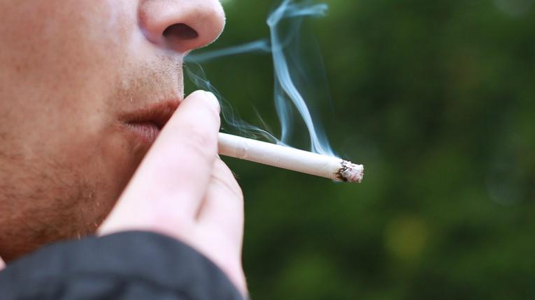

Consumo de tabaco aumenta el riesgo de contraer COVID-19

Además, los fumadores son más propensos a transitar la enfermedad con mayores complicaciones.
Las personas que fuman son más propensas a contraer COVID-19 y también a transitar la enfermedad con más riesgos, alertó el Ministerio de Salud Pública.
Los fumadores no solo presentan mayor incidencia de la enfermedad sino también una peor evolución y formas más graves de infección respiratoria, como influenza, neumonías o tuberculosis.
El MSP también aseguró que la evidencia acumulada durante la evolución de la pandemia demuestra que las células pulmonares de los fumadores son especialmente susceptibles a infectarse por el virus SARS-CoV-2, lo que repercute en una doble probabilidad de cursar la enfermedad de forma más grave que un no fumador.
Si bien aún no se ha demostrado que dejar de fumar aminora el riesgo de contraer la enfermedad, se considera que el cese del consumo disminuye las probabilidades de desarrollar infecciones respiratorias graves.
Posted On: 2021-02-14T03:00:00
Content Date: 2021-02-14
Download Date: 2021-04-08
Document ID: L0C049O9B